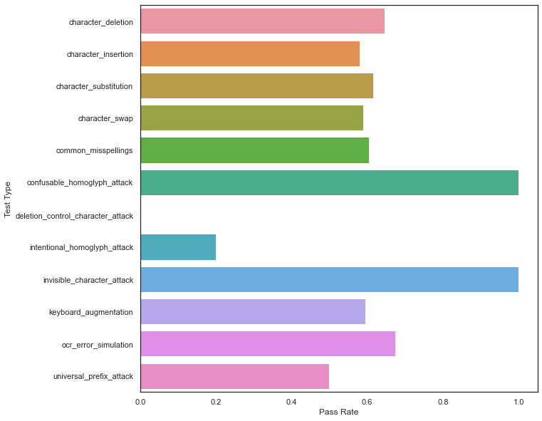
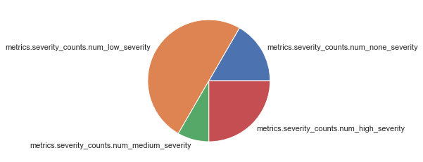

NLP Adversarial Robustness
This walkthrough will cover how to test your NLP model’s robustness to adversarial attacks. To run the demo, navigate to the Adversarial NLP Colab Notebook and follow the instructions or reference the tutorial below.
Adversarial NLP Walkthrough
You are the AI Risk Officer at a Consumer Social Company. The NLP team has been tasked with implementing a text classification model to predict the top-level “sentiment” of posts on the app. These predictions will later be consumed by multiple models throughout the company, such as recommendation, lead prediction, and the core advertisement models. You want to verify your models are sufficiently robust to adversaries seeking to exploit model vulnerabilities and boost content that your user base does not actually like.
In this Notebook Walkthrough, we will review our core product of AI Stress Testing of NLP models in an adversarial setting. RIME AI Stress Testing allows you to test any text classification model on any dataset. In this way, you will be able to quantify your model’s vulnerability to attacks and noisy data.
Your team’s NLP models are fine-tuned from state-of-the-art transformer models found on Hugging Face’s Model Hub 🤗. In particular, you have chosen to fine-tune a DistilBERT on data similar to the Stanford Sentiment Treebank dataset for a lightweight yet performant model.
To begin, please specify your RIME cluster’s URL and personal access token.
# set these before beginning!
CLUSTER_URL = '' # e.g., rime.<name>.rime.dev
API_TOKEN = ''
%pip install rime-sdk &> /dev/null
%pip install seaborn
Create the Image
First, we connect to the RIME cluster using the URL and API Token. To connect with Hugging Face, we create a managed image with the transformers and datasets dependencies installed.
from rime_sdk import Client
image_name = "adversarial_nlp"
# connect to your cluster
rime_client = Client(CLUSTER_URL, api_key=API_TOKEN)
# Specify pip requirements for the run. Some models require additional dependencies.
requirements = [
rime_client.pip_requirement("transformers"),
rime_client.pip_requirement("datasets"),
# Uncomment if you need sentencepiece
# rime_client.pip_requirement("sentencepiece"),
]
if not any([img['name'] == image_name for img in rime_client.list_managed_images()[0]]):
# Start a new image building job
builder_job = rime_client.create_managed_image(image_name, requirements)
# Wait until the job has finished and print out status information.
# Once this prints out the `READY` status, your image is available for use in stress tests.
builder_job.get_status(verbose=True, wait_until_finish=True, poll_rate_sec=20)
Create a Project + Start Stress Test
Below, create a project to store this and other future adversarial robustness stress test run results.
project = rime_client.create_project(
"NLP - Adversarial Robustness",
"Evaluating the robustness of text classification models against adversarial attacks."
)
config = {
"run_name": "DistilBERT Adversarial Robustness",
"data_info": {
"type": "huggingface",
"dataset_uri": "sst2",
"text_key": "sentence",
"label_key": None,
"eval_label_key": None
},
"prediction_info": {"n_samples": 500},
"model_info": {
"type": "huggingface_classification",
"model_uri": "distilbert-base-uncased-finetuned-sst-2-english"
},
"model_task": "Text Classification",
"test_config": {"categories": ["Adversarial"]}
}
# Launch a stress test run
job = rime_client.start_stress_test(test_run_config=config, project_id=project.project_id, data_type='nlp', rime_managed_image=image_name)
# Attach to the job and print status until completion
job.get_status(wait_until_finish=True, verbose=True, poll_rate_sec=15)
Review Adversarial Stress Test Run
Now that the test run is complete, we can check out the results in the RIME web interface.
job.get_link()
Query Results
Alternatively, we can query the test case results to identify model vulnerabilities.
test_run = job.get_test_run()
result_df = test_run.get_result_df()
result_df.head()
Test Severity: Let’s plot some of the results. First, let’s check the severity distribution of attack tests.
import seaborn as sns
import matplotlib.pyplot as plt
sns.set_theme(style="white")
severity_cols = [col for col in result_df.columns if 'severity_counts' in col.lower()]
severity_counts = result_df[severity_cols].iloc[0]
plt.pie(severity_counts, labels=severity_cols)
plt.show()

Reviewing Test Case Results
Next, let’s look at the results by attack type.
test_cases_df = test_run.get_test_cases_df(show_test_case_metrics=True)
test_cases_df.head()
fig = plt.figure(figsize=(10,10))
test_type_pass_rates = {name: (batch_df['status'] == 'PASS').sum() / len(batch_df) for name, batch_df in test_cases_df.groupby("test_batch_type")}
sns.barplot(y=list(test_type_pass_rates.keys()), x=list(test_type_pass_rates.values()), orient='h')
plt.xlabel('Pass Rate')
plt.ylabel('Test Type')
plt.show()

It’s evident that while this model is fairly robust to homoglyph-type attacks, it frequently fails to withstand character-level perturbations, indicating that additional data augmentation and/or a data sanitation pipeline should be applied before this model goes into production! One way to add additional augmented data to your training problem is through querying the results:
import pandas as pd
def filter_rows(text_series: pd.Series, label_series: pd.Series) -> pd.DataFrame:
filter_indices = ~label_series.isna()
return pd.DataFrame({'Augmented': text_series[filter_indices], "Labels": label_series[filter_indices]})
failed_df = test_cases_df[test_cases_df['status'] == 'FAIL']
# Simpler transformation-style augmentations
transformed_col = [col for col in test_cases_df.columns if col.endswith('transformed')][0]
class_col = [col for col in test_cases_df.columns if col.endswith('transformed_class')][0]
transformed_df = filter_rows(failed_df[transformed_col], failed_df[class_col])
# Evolutionary attacks examples
perturbed_col = [col for col in test_cases_df.columns if col.endswith('perturbed')][0]
perturbed_class_col = [col for col in test_cases_df.columns if col.endswith('perturbed_class')][0]
perturbed_df = filter_rows(failed_df[perturbed_col], failed_df[perturbed_class_col])
augmented_df = pd.concat([perturbed_df, transformed_df], ignore_index=True)
augmented_df.head()